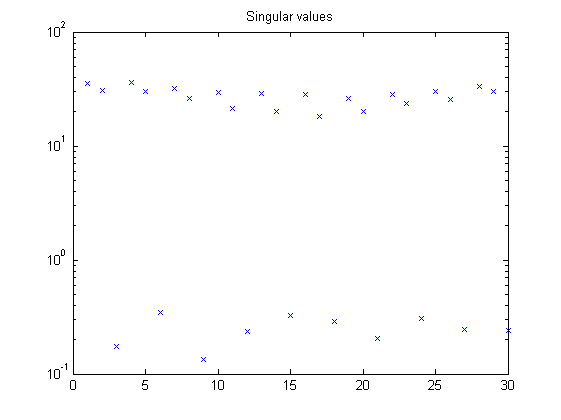
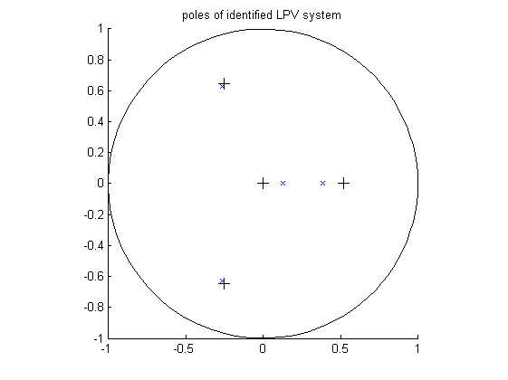

Contents
Example 21: Second-order Periodic-LPV model of flapping dynamics
close all; clear; clc;
Flapping dynamics of a wind turbine
% System matrices A1 = [0 0.0734; -6.5229 -0.4997]; A2 = [-0.0021 0; -0.0138 0.5196]; A12 = [A1 A2]; B12 = [-0.7221 0; -9.6277 0]; C12 = [1 0 0 0]; D12 = [0 0]; n = size(A12,1); % The order of the system m = size(A12,2)/n; % The number of scheduling parameters r = size(B12,2)/m; % The number of inputs l = size(C12,1); % The number of outputs
Open-loop identification experiment
Simulation of the model in open loop
% Defining a number of constants j = 10; % period np = 500; % number of periods N = np*j; % number of data points % measured data from the scheduling parameters mu3 = cos(2*pi*(1:N)'./j) + 0.2; % make affine LPV system M = idafflpv(A12,B12,C12,D12,eye(2),zeros(2,1),1); % simulation of the system with noise t = (0:N-1)'; u = randn(N,r); e = 0.1.*randn(N,l); y0 = sim(M,u,t,mu3); y = sim(M,u,t,mu3,e); disp('Signal to noise ratio (SNR) (open-loop)') snr(y,y0)
Signal to noise ratio (SNR) (open-loop) ans = 18.6035
Identification of the model in open loop
% parameters p = 5; % past window size f = 3; % future window size % LPV identification with noise mu1 = ones(N,1); mu = [mu1 mu3]; pnd = pschedclust(mu,f,p); [S,x,TU,K] = pordvarx(u,y,mu,f,p,pnd,'tikh','gcv',0,[0 0 1 1 0]); [x,CC] = pmodx(x,TU,K,n,1e-4,1e-8); [A,B,C,D,K] = px2abcdk(x,u,y,mu,f,p,[0 0 1 1 0],pnd); figure, semilogy(S(:),'x'); title('Singular values') disp('Canonical correlation coefficients (no noise)') CC(1:n)
Canonical correlation coefficients (no noise)
ans =
1.0000 1.0000
 Verification results
% Simulation of identified LPV system Mk = idafflpv(A,B,C,D,K,zeros(2,1),1); yidk = sim(Mk,u,t,mu3,e); disp('VAF of identified LPV system ') vaf(y,yidk)
VAF of identified LPV system ans = 97.3130
Identification results
% Plot eigenvalues figure hold on title('poles of identified LPV system') [cx,cy] = pol2cart(linspace(0,2*pi),ones(1,100)); plot(cx,cy,'k'); plot(real(eig(A1)),imag(eig(A1)),'k+','LineWidth',0.1,'MarkerEdgeColor','k', 'MarkerFaceColor','k', 'MarkerSize',10); plot(real(eig(A(1:n,1:n))),imag(eig(A(1:n,1:n))),'bx'); plot(real(eig(A2)),imag(eig(A2)),'k+','LineWidth',0.1,'MarkerEdgeColor','k', 'MarkerFaceColor','k', 'MarkerSize',10); plot(real(eig(A(1:n,n+1:2*n))),imag(eig(A(1:n,n+1:2*n))),'bx'); axis([-1 1 -1 1]); axis square hold off